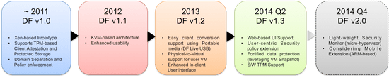
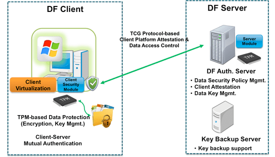

Data Firewall (DF)
Firewall: A TPM and Virtualization based Security Framework for Protecting Data in Commodity Computing Environment
Together with data encryption methods, server-based desktop environments, such as Virtual Desktop Infrastructure (VDI), are widely adopted to protect security-sensitive data in enterprises. However, data stored in the server can be leaked by an adversary who has the root privilege of the server because of the centralized management of encryption keys. In addition, data sharing among users is difficult because software-based encryption keys can be vulnerable to the adversary in an untrusted environment.
In this project, we proposed a Security Framework named Data Firewall which leverages Trusted Platform Module (TPM)-based encryption storage technique (we call this as Protected Storage) and data security policy enforcement using system virtualization. The main idea is to prevent data leak even if an adversary have the root privilege of VM or network storage server. TPM is a security chip that is typically available in most desktops and laptops, and supports functionalities such as remote attestation and hardware-based key management. Security-sensitive data are encrypted with a symmetric key called a protected key in Protected Storage. In order to access data stored in protected storages, the security policy of a client must be attested by a trusted authentication server. Once attested, the client is allowed to receive the associated protected key. The key management and the attestation of the security policy are conducted transparently. Moreover, we support a key distribution protocol to enable key sharing and backup using TPM functionalities. We ensure distributed keys to be used only in the verified client.
Data Firewall Development History 
Data Firewall Overview 
Publications
- Data Firewall: A TPM-based Security Framework for Protecting Data in Thick Client Mobile Environment. Wooram Park and Chanik Park. Journal of Computing Science and Engineering (JCSE), vol.5, pp.331-337, pp. 331-337, 2011. 12.
- 클라우드 스토리지 서비스에서의 TPM 기반의 안전한 데이터 접근 방법. 김윤구, 신재복, 박찬익. 2012 한국컴퓨터종합학술대회 (KCC2012), 2012. 06. 27
- AES-NI를 이용한 TPM 기반 암호화 성능 향상 기법. 구윤기, 신재복, 박우람, 박찬익. 2013 한국컴퓨터종합학술대회 (KCC 2013), 2013. 06. 25
Patents
- 네트워크 시스템에서 가상화 및 신뢰 플랫폼 모듈을 이용한 데이터 보안 처리 방법 및 기록매체 박찬익, 박우람. 등록특허 10-1069500, 등록일자2011-09-26
- 컴퓨터 시스템 보안을 강화하는 장치 및 방법 박찬익, 박우람, 신재복. 출원 10-2013-0145638, 2013-11-27
- 데이터 기밀성 보장 방법, 이를 이용하는 데이터 공유 방법 및 시스템 박찬익, 박우람, 신재복. 출원, 10-2013-0128704, 2013-10-28